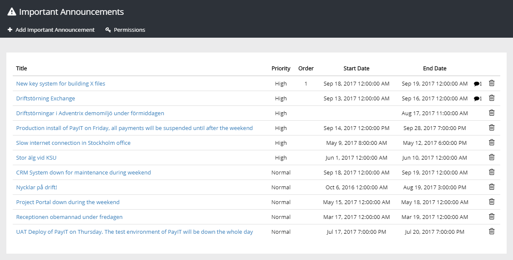
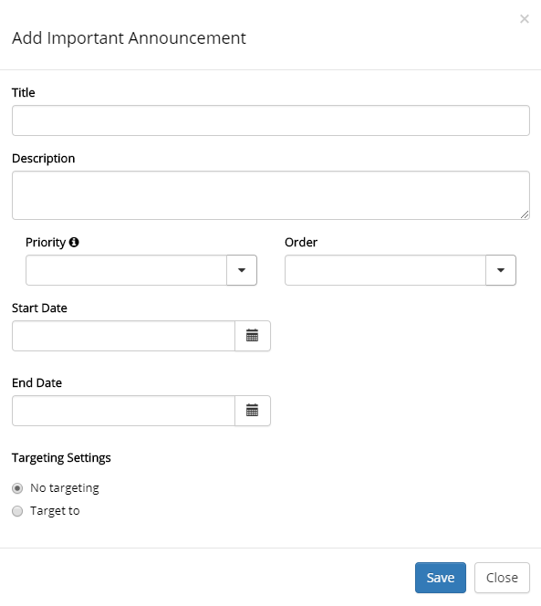
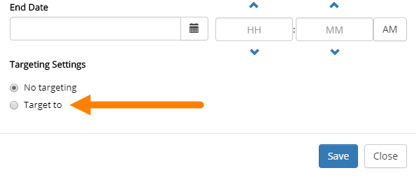
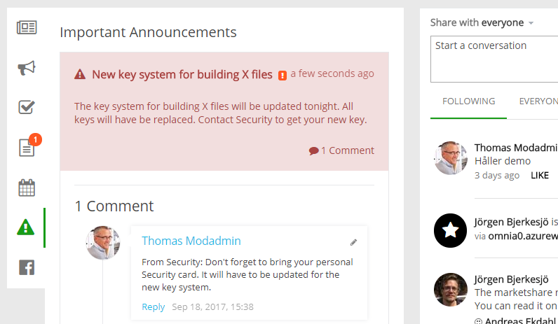
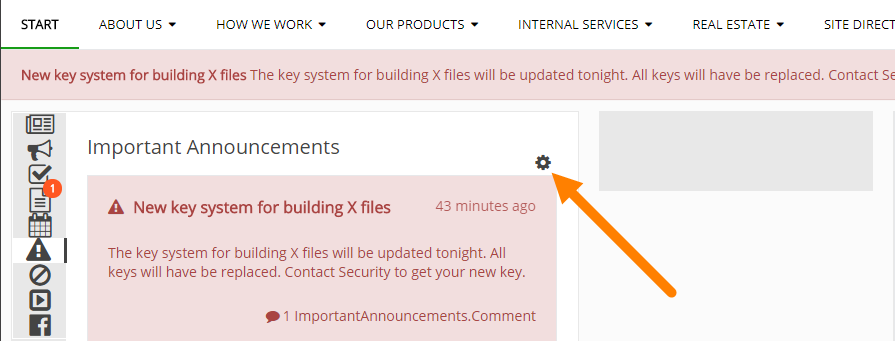
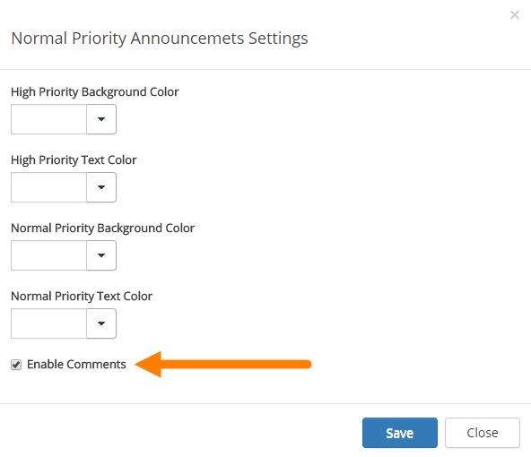

The tenant feature "Omnia Important Announcements" needs to be activated in order for the Important Announcements administration page to appear. The administration page displays the history of all important announcements published in the tenant.

Global and tenant administrators can add new Important Announcements. If additional users should be able to create important announcements, add them using the "Pemissions" option. You can add users or permission groups.
To add a new Important Announcement, click the link "Add Important Announcement".

An Important Announcement can be targeted to any receivers that has been defined in Target Definitions, see:
To target an Important Announcement, do the following:

Any user can comment an Important Announcement (if enabled, which is the default). It's done through the Notification panel and works exactly the same as commenting pages (for example news).
Here's an example:

To turn off, or turn on Important Announcements commenting, use this setting:

You can set the colors and at the bottom, enable or disable comments:
